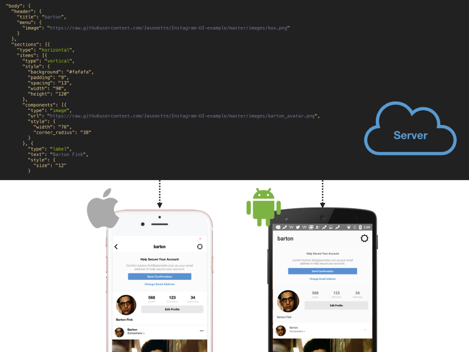
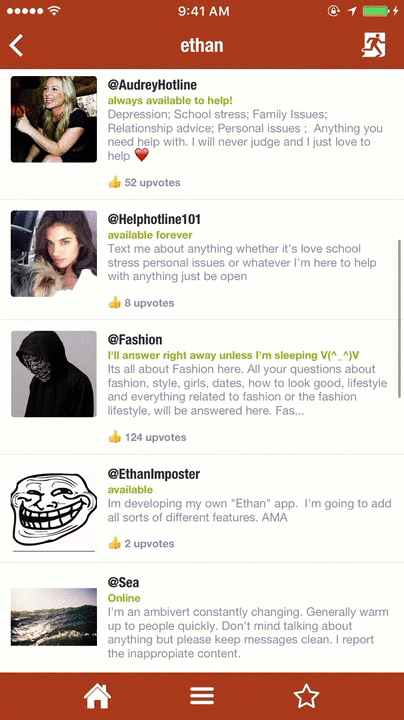
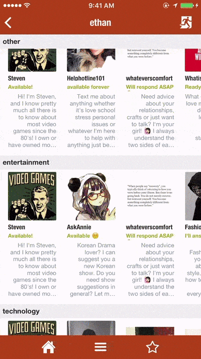
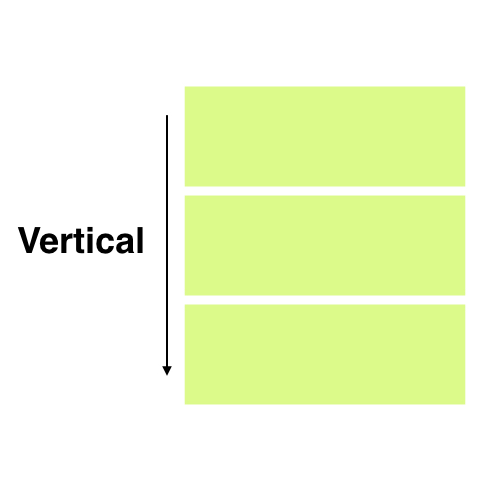
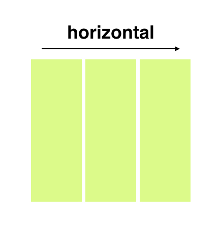
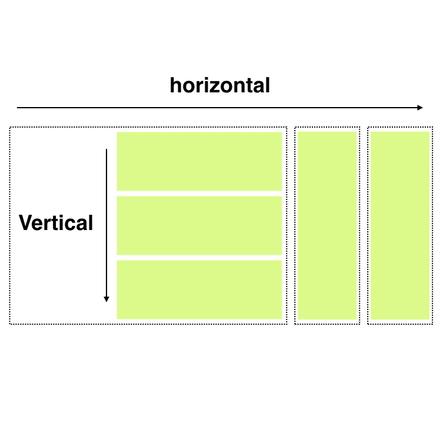
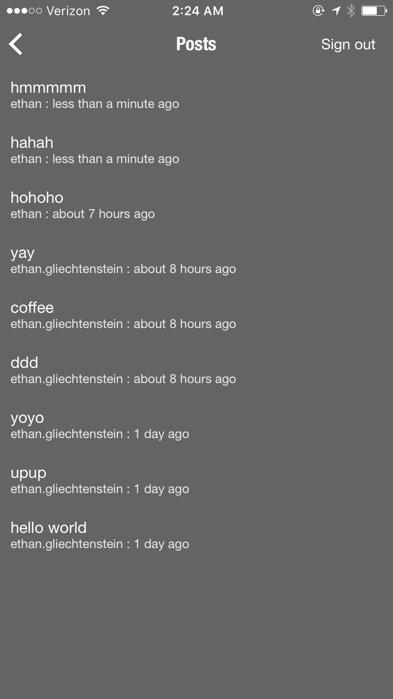
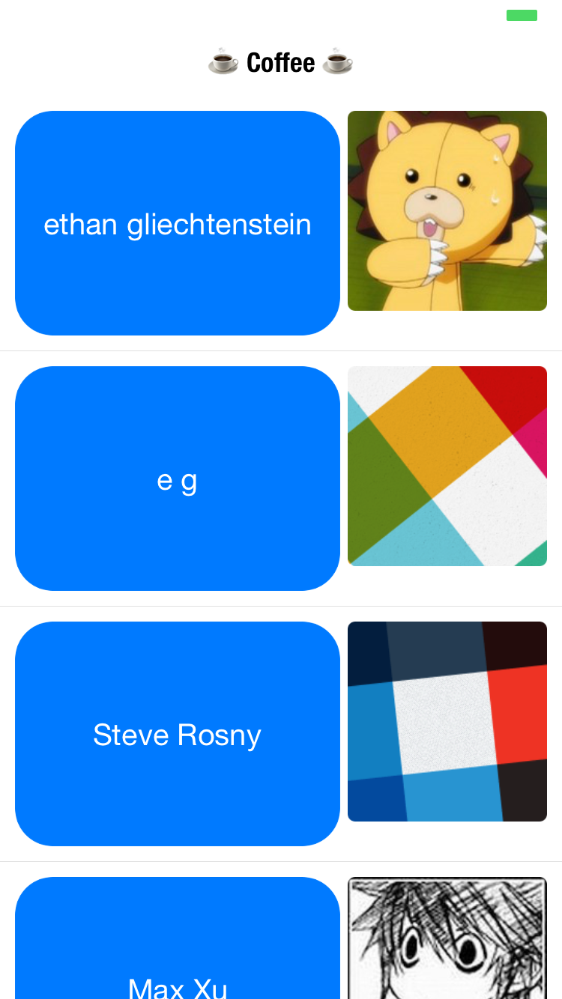
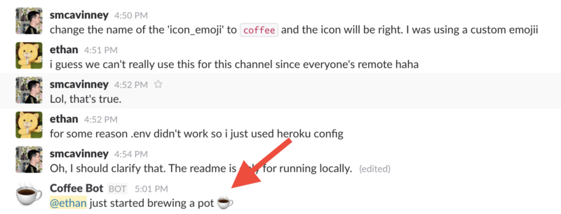

9 Discussions
Discussions and related info is dedicated to index and store links and other resources.
9.1 BeerJS - Chile - 2019
June 5th 2019, was made a presentation of Jasonelle in Santiago, Chile.
The presentation slides and related code is stored in the following repository:
https://github.com/jasonelle/beerjs


9.2 Building cross-platform mobile apps using nothing more than a JSON markup

This article was written by Ethan on FreeCodeCamp. https://www.freecodecamp.org/news/how-to-build-cross-platform-mobile-apps-using-nothing-more-than-a-json-markup-f493abec1873/#.i83lzc4g9
For the past few months, I’ve been working on a new way to build cross-platform, native iOS and Android apps called Jasonette.
It lets you describe an entire app with nothing but a single JSON markup.
If your app consists entirely of JSON, it can be treated like any other data. And it can be served remotely from the cloud on-demand.
The app logic no longer needs to be hardcoded on the device, and you can update it as much as you want just by updating your JSON on the server-side. Your app will be freshly loaded from the server every time you open it.
Jasonette has many different parts. You can express functions, templates, styles, and more all by using a JSON Markup. And as a result, you can write a super-sophisticated native mobile app in a fully Model — View — Controller (https://en.wikipedia.org/wiki/Model-view-controller) manner.
In this post I’ll show you specifically the “View” part:
- How Jasonette expresses various cross-platform UI patterns in JSON.
- How it implements these JSON-to-Native mappings internally.
9.2.1 Basic Structure
Under the hood, Jasonette works similarly to a web browser. But instead of interpreting an HTML markup and drawing a web view, Jasonette fetches a JSON markup and constructs a native view, on-the-fly.
The markup is just a JSON file that follows some predefined conventions.
First of all, it starts with a $jason key, which has two children:
head and body, and looks like this:
{
"$jason": {
"head": {
// ..metadata about the document...
},
"body": {
// ..actual content to be displayed on the view..
}
}
}
9.2.2 Design Philosophy
When I first started designing the JSON syntax for describing native views, I had a couple of constraints in mind:
Native: There’s a reason why iOS and Android came up with their own native layout systems. The layout systems designed for the desktop era don’t always translate well to the small device world. The syntax should express the underlying layout in as mobile native manner as possible.
Cross platform: Yet it needs to be cross platform. For example, iOS has something called autolayout (https://developer.apple.com/library/content/documentation/UserExperience/Conceptual/AutolayoutPG) and visual format language (https://developer.apple.com/library/content/documentation/UserExperience/Conceptual/AutolayoutPG/VisualFormatLanguage.html) but these are not implemented natively on Android, so not the right solution.
Simple yet expressive: It should be easily expressed in a simple JSON format and easy to compose into a sophisticated structure.
When you take a look at how most mobile apps are built, they all boil down to a small number of common interface patterns:
- Vertically scrolling list
- Horizontally scrolling list
- Absolute positioning
- Grid
Let’s take a look at the first three, since they are most widely used.
9.2.3 Sections — Describing scrolling lists
The most frequently used UI pattern is scrolling lists. On Jasonette we call them sections.
There are two types of sections: Vertical and Horizontal.
Vertical sections scroll vertically, and horizontal sections horizontally.
|  |  |
| Vertical Section | Horizontal Section |
9.2.3.1 Implementation — Vertical Sections
This is probably the most frequently used UI for displaying data on mobile devices. On iOS, Jasonette implements this with UITableView (https://developer.apple.com/reference/uikit/uitableview). On Android it’s implemented with RecyclerView (https://developer.android.com/reference/android/support/v7/widget/RecyclerView.html).
{
"body": {
"sections": [{
"items": [{
"type": "label",
"text": "Item 1"
}, {
"type": "label",
"text": "Item 2"
}, {
"type": "label",
"text": "Item 3"
}]
}]
}
}On iOS, above JSON markup creates a UITableView (https://developer.apple.com/reference/uikit/uitableviewcell)
with three UITableViewCells (https://developer.apple.com/reference/uikit/uitableviewcell),
each of which contains a UILabel (https://developer.apple.com/reference/uikit/uilabel), with corresponding text attributes.
On Android, it creates a RecyclerView with three items,
each of which is a TextView (https://developer.android.com/reference/android/widget/TextView.html)
that displays the corresponding text attributes.
All of these are constructed programmatically without any use of Storyboards in iOS (https://developer.apple.com/library/content/documentation/General/Conceptual/Devpedia-CocoaApp/Storyboard.html) or XML layout files (Android) (https://developer.android.com/guide/topics/resources/layout-resource.html) in order to make sure every detail is programmable dynamically.
9.2.3.2 Implementation — Horizontal Sections
Syntax-wise, horizontal sections are not much different,
all you need to do is set the type as “horizontal”, and the items flow horizontally.
{
"body": {
"sections": [{
"type": "horizontal",
"items": [{
"type": "label",
"text": "Item 1"
}, {
"type": "label",
"text": "Item 2"
}, {
"type": "label",
"text": "Item 3"
}]
}]
}
}Note
The syntax for the horizontal section is simple, but internally it’s actually quite complex. Horizontal sections on iOS were implemented with UICollectionView (https://developer.apple.com/reference/uikit/uicollectionview). It’s a well-known technique, but basically a horizontally scrolling UICollectionView is embedded into its parent UITableView (which scrolls vertically). And on Android, it’s implemented in a similar manner, but using nested RecyclerViews instead.
9.2.4 Items — Describing layout within each scrolling unit
Now that we understand how the top level view is structured,
let’s look at items. Each section is made up of multiple units of scrollable items.
Note that each item has a fixed dimension and nothing inside the item itself scrolls.
An item can be:
- Just a single component like a
label,image,button,textarea, etc. - A combination of all of those components.
Implementing this part was not as straight-forward as the sections implementation,
because I had to choose a cross-platform, native, simple, and expressive way to form a
super-sophisticated layout.
Thankfully, iOS and Android have very similar native layout systems called UIStackView (https://developer.apple.com/reference/uikit/uistackview) and LinearLayout (https://developer.android.com/reference/android/widget/LinearLayout.html), respectively. And these layout schemes in turn are similar to CSS Flexbox (https://developer.mozilla.org/en-US/docs/Web/CSS/CSS_Flexible_Box_Layout/Using_CSS_flexible_boxes), so I would say it’s as cross-platform as it can get.
Lastly, these layout systems are infinitely composable. As seen below, you can create a vertical layout, a horizontal layout, or nest a vertical layout within a horizontal layout, and so forth, recursively.
  
To create a vertical layout, you would set the type as vertical, and then set its components:
{
"items": [{
"type": "vertical",
"components": [{
"type": "label",
"text": "First"
}, {
"type": "label",
"text": "Second"
}, {
"type": "label",
"text": "Third"
}]
}]
}Same thing with horizontal layout. Just set the type as horizontal instead:
{
"items": [{
"type": "horizontal",
"components": [{
"type": "image",
"url": "http://i.giphy.com/LXONhtCmN32YU.gif"
}, {
"type": "label",
"text": "Rick"
}]
}]
}Nesting layouts is as simple as specifying a layout as another layout’s component.
{
"items": [{
"type": "horizontal",
"components": [{
"type": "image",
"url": "http://i.giphy.com/LXONhtCmN32YU.gif"
}, {
"type": "vertical",
"components": [{
"type": "label",
"text": "User"
}, {
"type": "label",
"text": "Rick"
}]
}]
}]
}I have not talked about the styling feature here for the sake of brevity,
but you can style each individual component as well as the layout itself to make sure the
layout looks exactly like you wanted.
All you need to do is add style objects
describing font, size, width, height, color, background, corner_radius, opacity, etc.
9.2.5 Layers — AKA “absolute positioning”
Sometimes you may want to position items at exactly certain parts of the
screen without scrolling. In CSS-terms we would call this “absolute positioning”.
Jasonette supports this through what’s called layers.
Currently layer supports two types of child components: image and label.
You can place these components anywhere you desire on the screen this way. Here’s an example:
A Jasonette app with layer items
In this example, we have two labels (the temperature and the weather messages) and an image (the camera icon) on the screen, whose coordinates have been explicitly set to make sure they stay in place without scrolling.
The markup would look something like this:
{
"$jason": {
"body": {
"style": {
"background": "camera"
},
"layers": [{
"type": "label",
"text": "22°C",
"style": {
"font": "HelveticaNeue-Light",
"size": "20",
"top": "50",
"left": "50%-100",
"width": "200",
"align": "center"
}
}, {
"type": "label",
"text": "few clouds",
"style": {
"font": "HelveticaNeue",
"size": "15"
}
}, {
"type": "image",
"url": "https://s3.amazonaws.com/.../camera%402x.png",
"style": {
"bottom": "100",
"width": "30",
"color": "#ffffff",
"right": "30"
}
}]
}
}
}Amazingly enough, this is all you need to know in order to build any kind of sophisticated view you can imagine on mobile devices.
Just like you can build anything with simple lego blocks, you can compose these basic components and layouts in different ways to create any sophisticated view.
Here are some examples, 100% built by composing aforementioned UI elements:
- Instagram UI (https://github.com/jasonelle/docs/tree/master/examples/jasonette/apps/instagram)
- Twitter UI (https://github.com/jasonelle/docs/tree/master/examples/jasonette/apps/twitter)

9.2.6 Beyond Views
If you read this far, you may be either thinking:
- “Wow cool! I wanna try this!”, or
- “Yeah you can probably build a toy app, but no way you can build a production app using this way!”.
Like I briefly mentioned above, this is just the “View” part of Jasonette, which is the simplest part. But what’s really powerful about Jasonette is that you can actually go much further and write a full declarative program in JSON.
You can attach actions to UI elements, which get triggered when a user touches them. You can also trigger these actions one after another via success/error callbacks. You can also listen to certain events and automatically trigger these actions.
Just like this, when you can describe not just a “View” but also the “Model” and the “Controller” logic (all in JSON), you can do anything.
9.2.7 What is possible?
Since all you need is a server that sends JSON, Jasonette is completely platform agnostic. There is no proprietary server technology you need to depend on. All you need is JSON.
And JSON can come from anywhere, from local device, to remote servers, to even a Raspberry pi! (https://www.raspberrypi.org/documentation/remote-access/web-server/nginx.md).
Have a web app? : If you already have a web app, you can instantly build a mobile native app for your Node.js app, Rails app, Django app, PHP app, or really any web app, just by making requests to your API endpoint.
You don’t even need a server : Since you can fit an entire model-view-controller in a single, self-contained JSON file, you can pretty much store and serve it from anywhere. You can even create an app from a static JSON file served from a Pastebin or Github!.
Turn any HTML website into an app : Jasonette has a powerful HTML-to-JSON parser powered by the cheerio library which lets you transform any HTML into a JSON object. And you already know what we can do when we have JSON — you can build a native view from the transformed JSON! This way, you can build a native app from a website that doesn’t even have an API. Of course, the recommended way is to use JSON whenever you can, but this is really cool regardless.
I can go on forever, but here are some examples:
A photo sharing app that lets you take a photo using the device camera and upload it to S3, and then post the entry to your own server, creating a feed:
https://github.com/jasonelle/docs/tree/develop/examples/jasonette/apps/s3-upload-example
S3 Upload Example
A Node.js powered Eliza Chatbot app for iOS and Android:
https://github.com/jasonelle/docs/tree/develop/examples/jasonette/apps/eliza-example
Eliza Example
A Microblog app, complete with session management:
https://github.com/jasonelle/docs/tree/develop/examples/jasonette/apps/token-authentication-example
|  |
A remote control app for Slack bots:
http://jasonelle.com/jasonette-old-blog/2017/01/17/build-a-slackbot-with-jasonette/
https://github.com/jasonelle/docs/tree/develop/examples/jasonette/apps/coffee-app
|  |  |
An example app that turns an HTML web page into JSON and then turns it into a native app:
https://github.com/jasonelle/docs/tree/develop/examples/jasonette/apps/iosdevweekly

iOS Dev Weekly
9.2.8 Conclusion
Jasonette is a young project. I open-sourced the iOS version in late 2016, and the Android version a month later.
But it has already grown into a vibrant community of contributors and makers and is under active development. I hope this technology will empower anyone (not just developers) to build apps effortlessly.
9.3 Native Mobile View as Microservice
This article was published by Ethan on https://medium.com/(???).
How sandboxed views talk to each other in Jasonette.

Jasonette takes security very seriously. The entire architecture was built on a sandbox model that took inspiration from web browsers and applied to mobile context.
Each view is completely sandboxed but they can communicate with other views through predefined protocols, resembling how microservices work (https://en.wikipedia.org/wiki/Microservices).
In this post I will explain:
How the sandbox model works in Jasonette.
How two views can communicate back and forth using
$hrefand$okaction protocols.
9.3.1 How Sandbox Model Works in Jasonette
If a language encourages certain design patterns that are insecure, regardless of how secure the low level architecture is, we should consider the language insecure.
For example, the language could facilitate a way to build an entire mobile app as a SINGLE view, based on highly inter-wined modules with complex dependency graph. This would force anyone who wants to understand and audit the code to understand the entire app as a whole. This means fewer people will even attempt to do something like this. With fewer eyeballs, the application is less secure.
Therefore it is a good idea to break an app out to multiple views, each of which performs an atomic task, and can communicate with one another in a loosely coupled manner.
To break an app out into multiple units Jasonette takes the following approach:
- Sandboxed Containers: Each View is a sandboxed container.
One view can’t manipulate another view.
A view can also contain child containers like
agentsandwebcontainers, which are also sandboxed themselves.
https://jasonelle.com/jasonette-old-docs/web/.
https://jasonelle.com/jasonette-old-docs/agents/.
- Protocol Based Communication between Containers: All containers must communicate with each other through standard protocols instead of directly executing actions remotely. Otherwise we end up with too tightly coupled dependency, which makes the code complex, difficult to reuse unless you’re a programmer, and hard to understand.
Let’s look into how the sandbox model works in Jasonette.
9.3.2 Agents and Web Container
In communicating with agents and web containers, Jasonette puts top priority on security, which is why each container and agent is completely sandboxed from the outside world, and the only way to communicate is through a pre-defined JSON-RPC protocol.
9.3.3 Local Variables
Same goes for communication between views. All views are completely sandboxed, you may be able to transition from one view to another, and you may be able to pass messages, but one view cannot directly execute actions in another view.
Also, all local variables are sandboxed per view. There are two types of read/write local variables, “local” meaning they are sandboxed to the parent view.
Ephemeral Local Variable: Tied to a view through URL, only on memory, so it goes away when the user navigates away. You can write through
$setaction and read through$getCache Local Variable: Similar to ephemeral local variable, but stays persisted instead of going away after the user navigates away. You can write through
$cache.setand read through$cache.[variable name].
This means View A can’t access anything that belongs to View B and vice versa. This is the security model web browsers use, and is critical to building secure apps with loosely coupled views.
Just to be clear,
there does exist a way to implement a shared
data layer using $global but that’s out of scope
for this article. The point is,
when you define a local variable from a view,
there is no way other views can access them.
OK it’s great to know it’s secure, but a question arises:
“What if I want View A and View B to communicate?”.
9.3.4 Cross-View Communication Protocol
We have a new addition to Jasonette that makes this possible while securing the sandboxed nature of views. Here’s a typical sequence of events:
- View A sends data to View B.
- View B uses the data to carry out tasks and return a response back to View A.
- View A can continue on with the return value it received from View B.
Does this sound familiar? It’s like a function call!. Also, it is a similar security model to the request-and-response model employed by agents and web container.
Below I’ll explain each step of the communication process.
9.3.4.1 Step 1. Calling a View with Parameters
First we pass some parameters to the next view through $href action.
You define parameters under the options attribute.
Here we pass two parameters firstName and lastName:
{
"type": "$href",
"options": {
"url": "https://jasonbase.com/things/3fj.json",
"options": {
"firstName": "Bart",
"lastName": "Simpson"
}
}
}The attributes will be accessible as $params.firstName
and $params.lastName from the next view.
This feature has been available from the beginning,
so you may already know this.
9.3.4.2 Step 2. Go Back to Previous View with Return Values
This feature is new.
To return values back to the caller view,
we use an action called $ok. Previously the only
option we had of going back to the previous view was $back,
which simply went back a level but didn’t have ability to
pass a return value back.
We can trigger $ok at any point in the view lifecycle.
For example, we can immediately trigger it on $load to make it
return immediately, like this:
{
"$jason": {
"head": {
"title": "Return Immediately!",
"actions": {
"$load": {
"type": "$ok",
"options": {
"fullName": "{{$params.firstName}} {{$params.lastName}}"
}
}
}
}
}
}Or we could let the user manually trigger $ok .
This can be useful for accepting user input and
returning the value to the previous view. For example:
{
"$jason": {
"head": {
"title": "Form"
},
"body": {
"sections": [{
"items": [{
"type": "textfield",
"name": "username"
}, {
"type": "textfield",
"name": "password",
}, {
"type": "button",
"text": "Login",
"action": {
"type": "$ok",
"options": {
"username": "{{$get.username}}",
"password": "{{$get.password}}"
}
}
}]
}]
}
}
}You can basically implement the $ok action anywhere
to return to the previous view with return values.
Here’s an example where a QR code scanner returns
the scanned value back to the previous view:
{
"$jason": {
"head": {
"title": "QR Scanner",
"actions": {
"$vision.ready": {
"type": "$vision.scan"
},
"$vision.onscan": {
"type": "$ok",
"options": {
"response": "{{$jason.content}}"
}
},
// ...9.3.4.3 Step 3. Process the Return Value with “success” callback
In step 1 I only discussed a simple $href case where
all it does is send some parameters to the next view.
The $href action didn’t have a way to handle its return value.
So even if we did everything
correctly from the next view and
returned via $ok action, there would not be a way to deal with them.
Let’s make a small tweak to the JSON markup and add a success callback to handle the return value:
{
"type": "$href",
"options": {
"url": "https://jasonbase.com/things/3fj.json",
"options": {
"firstName": "Bart",
"lastName": "Simpson"
}
},
"success": {
"type": "$util.alert",
"options": {
"title": "Full Name",
"description": "Full Name is: {{$jason.fullName}}"
}
}
}When you come back from the other
view through the $ok action, its options
object is returned as $jason, and you can
continue on with the rest of the action call chain.
So what actually happens when Jasonette runs the above $href markup is:
It transitions to the next view with
BartandSimpsonas parameters.Meanwhile, the caller view is waiting for the callee view to return with
$ok. Rest of the action call chain is paused.The next view immediately comes back to the caller view and returns
"Bart Simpson"stored underfullNameattribute.Now that the caller view has access to the
fullNameattribute through$jasonvariable, it can continue on with rest of the action call chain.
9.3.5 Conclusion
Building apps in a tightly coupled manner results in less transparency and consequently less security.
This is why breaking an app down to multiple functional sandboxed views is a good idea and why that forms the basis of Jasonette’s core architecture. The two way communication protocol between Jasonette views ensure that views are loosely coupled.
This architecture is similar to the
secure sandbox model of web browsers,
but it also adds one additional ability
that web browsers don’t support. It lets views
communicate with each other through the $href and $ok protocols,
resembling a microservice architecture but implemented on
the mobile frontend.
- You can learn more about
$hrefaction here: https://jasonelle.com/jasonette-old-docs/actions/#href. - You can learn more about
$okaction here: https://jasonelle.com/jasonette-old-docs/actions/#ok. - You can learn more about all other ways of returning from a view here: https://jasonelle.com/jasonette-old-docs/actions/#view.
9.4 Apps for a Lifetime
This article was written by CLSource
Many of us create mobile apps for a living. Of all the software being made today, mobile apps have the saddest future.
Little fragments composed by ones and zeroes working on a device that fits in your pocket. Some use smartphones for communication, others use them for entertainment, working, etc.
Many users ignore the enormous effort and dedication that is required to give life an app. It’s a shame all those hours that developers, designers, managers and other people invested in the app’s creation process. Can be lost and forgotten forever.
9.4.1 A trip to the future
Let’s go some years to the future. Year 2062. Maybe you formed a happy family. Your friends and relatives will have kids, nephews, grandchildren, and so on.
One of them ask you how it was living in the 2010’s as a Software Developer.
What was an iPhone?, How apps were made?, How they worked?, Can I still use them now?.
As a software developer you could tell them by your memories and experiences. But people in the future will never experience apps the same way we do it now.
9.4.2 State of the Art
If we want to experience software made 15, 20 or 30 years ago, we can use them without much trouble.
Simply use a virtual machine, emulators or using the original hardware if you are lucky enough. We can learn from those software applications by using them.
Software made 15 years ago required little or no internet access to function. They didn’t need “cloud” servers or “social media platforms” to deliver access to the features. Now you can easily play games, and use enterprise or offimatic software by using virtual machines or another techniques.
Today such kind of software is made too (that could still be used in 15 years), but for mobile apps is a totally different scenario.
Mobile apps are super difficult to be preserved for future generations and will fall in a digital black hole.
9.4.3 Space Jam
Let’s look to this example. The Space Jam movie website (https://www.warnerbros.com/archive/spacejam/movie/jam.htm). More than 20 years have passed since it’s debut in 1996 and still we can enjoy it with a modern browser. Also it can be easily preserved using tools like the web archive (http://web.archive.org/web/20170102152426/https://www.warnerbros.com/archive/spacejam/movie/jam.htm) so if Warner Bros decides to shut it down we could still see the website.
9.4.4 The Mobile App Blackhole
When iOS 11 arrived many 32 bit applications died for ever.
But this was not the first time an operating system update causes troubles with mobile apps.
Let’s see this page from 2015 https://www.polygon.com/2015/10/7/9470351/telltale-games-titles-removed-from-app-store-due-to-ios-9-issues.
“Back to the Future, A Wolf Among Us, and other mobile ports of Telltale Games’ adventure tiles have been removed from the App Store following problems with the new iOS9. — Polygon.com”
9.4.5 Why this Mobile Blackhole Happens?
Many motives could be behind an app’s shutdown. The following motives could affect most applications:
- An Operating system update deletes deprecated libraries and functions. Apps that use those libraries and functions will cease to work.
- A cloud service changes it’s api structure, policies or it’s deleted. Services like Facebook, Twitter, iCloud and many others. A clear example was the death of Parse (A Backend as A Service). http://blog.parse.com/announcements/moving-on/. Causing a lot of apps to be re-enginered or simply left for dead.
- Hardware device is obsolete and not supported by manufacturer any more. Some apps are highly coupled with the device’s hardware. If the hardware changes too much and the app is not updated, slowly the app will be forgotten.
- Google, Apple, Microsoft or “Company X” will cease to exist. These big companies control the application stores. We can not guarantee that in 500 years these companies will still be alive and supporting the eco-systems made today. They have total control of the mobile app’s enviroment. We can not archive such enviroments or create emulators that can re create what we have today.
- Original creator of the application is dead. A bankrupcy or simply bought by a bigger company that is not interested in maintained older apps.
- App was removed due to other motives like legal rights problems.
- App does not make enough money to justify or pay maitainence efforts.
Initiatives like The Internet Archive (https://archive.org/) try to solve this “blackhole” problem of our digital age. Millions of documents, audios, videos, websites and older software are being preserved for future generations. But it’s virtually impossible to replicate and archive the same environment needed for an App that uses Facebook, Stripe.com and some other services to fully function.
9.4.6 Apps that can last 100 years
Thanks to Jasonelle you can create apps that can last 100 years or more. Because they are made using JSON.
Is natural to think that not all apps could be saved, specially those that require servers or use external dependencies.
But if your apps consist mainly of static assets like json, javascript, images and videos you can be sure that as long as an interpreter exists you can replicate the behaviour of the app.
This means the app is not coupled with Apple or Google systems. Is not a binary. Is a representation of data and logic that can be easily replicated with new technologies, vendor free.
You could create a zip file with all the assets and then saved it in a public library. Then in 100 years anyone could open that file with an interpreter and your app will be alive.
Make something useful, funny, weird or anything you could dream. And in 100 years people could still use that piece of software.
That’s awesome.
You can use other technologies for making apps. But they are coupled with the current mobile ecosystem. With Jasonelle you have the power to create a legacy and a make dent in the world.
9.4.7 Conclusion
Mobile apps are different than a website or other software. Because mobile apps depends on ecosystems highly controled by companies like Apple or Google.
They use cloud services that could die. This causes that mobile apps have a short life span of a couple of years, depending on the original creator to maintain them and if the conditions to work (servers, apis) don’t change or a kept up to date in the app.
If any condition changes and the maintainer is gone. People will lost the oportunity to use the app and learn from it.
The solution is using a technology that is vendor agnostic. A technology which can be interpreted the same way as HTML. We need a browser for apps.
We need Jasonelle.